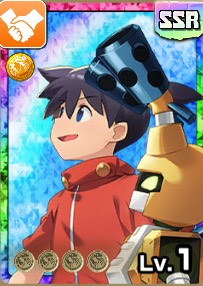

イッキ（SSR）
基本情報

SSR
| レアリティ | SSR |
|---|---|
| オーラ | 黄 |
| カードタイプ | 友人 |
管理者による評価
アシスト効果
無凸
| イベント効果アップ +30% | イベントによるステータス上昇量アップ |
|---|---|
| オーラトレ集合率アップ +15% | 育成対象とオーラ一致したとき、トレーニングに出現するキャラが集まりやすくなる（重複不可） |
| 応援効果サポート +8% | 一緒にトレーニングかつトレーニングで応援が発生しているとき、応援効果アップ |
| 忠誠度効果アップ +15% | 忠誠度に応じて基礎ステータスの上昇量アップ |
| トレーニング出現率アップ +15% | トレーニングに出現する確率アップ |
1凸
| フォースボーナス +1 | 一緒にトレーニングしたとき、ライフと命中の上昇量アップ |
|---|---|
| 応援効果サポート +8% | 一緒にトレーニングかつトレーニングで応援が発生しているとき、応援効果アップ |
2凸
| オーラトレ集合率アップ +15% | 育成対象とオーラ一致したとき、トレーニングに出現するキャラが集まりやすくなる（重複不可） |
|---|
3凸
| 忠誠度効果アップ +15% | 忠誠度に応じて基礎ステータスの上昇量アップ |
|---|
管理者による解説
・評価点数は低いがロード秘伝での能力パッケージとしては非常に有用で、MRイッキの能力と重なる（未検証）ことでカチカチモンスターが爆誕する。
・単体で見ても配布能力としては破格の性能。